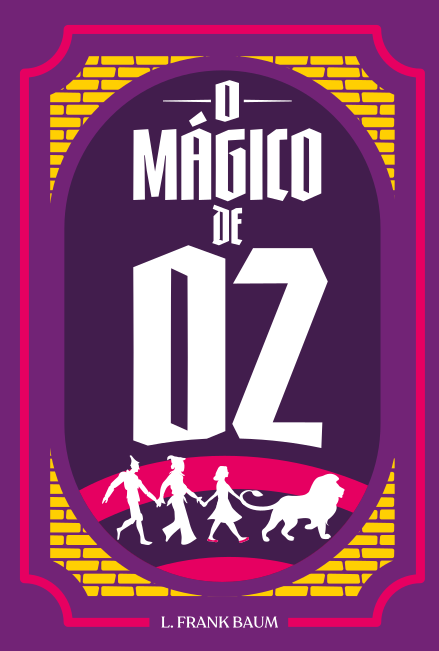

Project
Book Design
O Mágico de Oz
A complete editorial redesign of The Wonderful Wizard of Oz, the literary classic written by L. Frank Baum and first published in 1900. The project includes cover design, custom lettering, illustrations, chapter openings and the complete book layout, reinterpreting the story through a contemporary visual approach that preserves its literary character.
Um projeto de redesign editorial completo de O Mágico de Oz, clássico literário escrito por L. Frank Baum e publicado originalmente em 1900. O trabalho contempla o desenvolvimento da capa, lettering, ilustrações, aberturas de capítulo e diagramação integral da obra, reinterpretando a narrativa por meio de uma abordagem visual contemporânea que preserva seu caráter literário.


Concept
The book is conceived as a stage for Dorothy's journey. Drawing inspiration from classic illustrated editions and theatrical imagery, the design explores the relationship between storytelling and visual composition. The cover frames the Yellow Brick Road through an arched opening, evoking the feeling of looking into another world. Inside, each chapter begins as a new act, with color and illustration introducing the next stage of the adventure.
O livro é concebido como um palco para a jornada de Dorothy. Inspirado em edições ilustradas clássicas e na linguagem visual do teatro, o projeto explora a relação entre narrativa e composição gráfica. A capa enquadra a estrada de tijolos amarelos por meio de uma abertura em arco, evocando a sensação de observar outro mundo. No miolo, cada capítulo começa como um novo ato, com cor e ilustração introduzindo a próxima etapa da aventura.



Visual language
A journey beyond the ordinary.
Uma jornada para além do ordinário.
The visual language draws on the theatrical and fantastical nature of Oz. Custom lettering gives the title an expressive, angular character, while Recoleta introduces a softer typographic rhythm throughout the book. Deep purples evoke the atmosphere of a theatrical curtain, contrasting with the yellow of the iconic brick road and vibrant pink accents. Together, typography, color and illustration create a visual narrative that connects the physical book to the imaginative world of the story.
A linguagem visual parte da natureza teatral e fantástica de Oz. O lettering desenvolvido para o título apresenta um caráter expressivo e anguloso, enquanto a Recoleta introduz um ritmo tipográfico mais suave ao longo do livro. Os tons profundos de roxo evocam a atmosfera de uma cortina teatral, contrastando com o amarelo da icônica estrada de tijolos e com acentos de rosa vibrante. Juntas, tipografia, cor e ilustração constroem uma narrativa visual que aproxima o objeto editorial do universo imaginativo da história.


Read the bookLeia o livro
Click the page, use the arrows or swipe to turn. Clique na página, use as setas ou arraste para virar.
Credits
- Art Direction / Layout / Illustration
- Victor Hugo Fávaro
- Art Direction / Graphic Design / Illustration
- Eva Meira
- Art Direction / Curation / Graphic Design
- Giovanna Bellucci
- Graphic Design
- Izabella Felix
Next projectBoard Game
Metrópole→